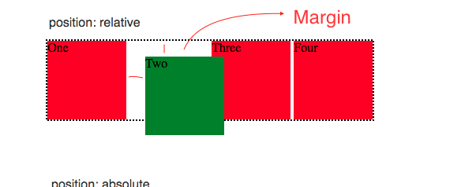
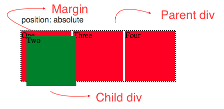

Ali Sultani
On:30th June 2021
What are the differences between relative, absolute, and fixed positioning?
Relative, Absolute, and Fixed are some of the values for the display property of an element in CSS. The relative positioning of an element positions that element on a page relative to its surrounding elements. For example if two div elements are sitting next to each other on a page and they both have relative value for their display property then both elements will relative to each other setting a margin will distance that element relative to its neighbours elements.
Absolute positioning positions an element relative to its parent element for example, if a div element is setting inside another div element and when you set its display property to absolute the child div will position itself relative to the parent dive. You can set the position of the element inside the parent element by setting its left, right, top, bottom properties.
A fixed position element is positioned relative to the viewport which means if the page is scrolled the element stays in the same place on the viewport. Top, left, right, bottom properties are used to position the element in the viewport. Sticky navbar on websites is an example of fixed position.